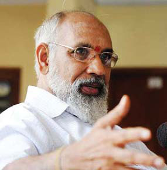
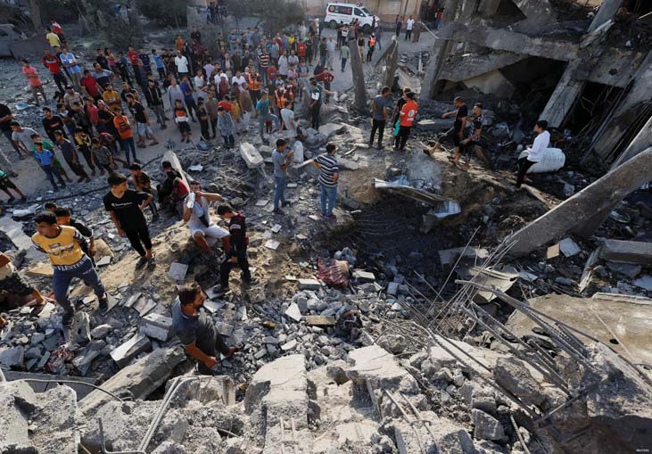

Vigneswaran’s ‘Lio’ Leap: A Blockbuster of Political Blunders
Vigneswaran’s ‘Lio’ Leap: A Blockbuster of Political Blunders
Jaff na Monitor hellojaff namonitor@gmail.com 21 He continued, “A pivotal moment in the spread of Buddhism in this region revolves around Sangamittā, the daughter of Emperor Ashoka. She undertook a remarkable mission, carrying with her a sacred branch of the Bodhi Tree—an esteemed symbol of Buddhism— from India to Sri Lanka. Her arrival took place at the ancient port of Dambakola Patuna, which we now recognize as Mathagal, situated within the Jaff na region of Sri Lanka. Arrived in Dambakola Patuna, she made her way to Anuradhapura. Th is remarkable journey traversed predominantly Tamil-speaking areas. As she made her way from Mathagal to Anuradhapura, her presence and the sacred branch of the Bodhi Tree, she carried profoundly impacted the local communities along the route. Many people in these areas embraced Buddhism, inspired by Buddha’s teachings and Sangamittā’s mission. Th is journey played a signifi cant role in spreading Buddhism and fostering Buddhist communities in these Tamil-speaking regions. He went on, “Indeed, it’s disheartening to see the prevailing misconception in modern Sri Lanka, which wrongly associates Buddhism solely with the Sinhalese. Th e real story is far more inclusive. Buddhism had a rich and enduring legacy among the Tamil population. Tamil scholars and Buddhist monks of Tamil descent have played crucial roles in spreading the profound teachings of the Buddha’s Dhamma.” “As you might know,” he continued, “the Five Great Epics—Silappatikāram, Manimekalai, Cīvaka Cintāmaṇi, Valayapathi, and Kuṇṭalakēci—are treasured in Tamil culture. Manimekalai and Kuṇṭalakēci were craft ed by Buddhists, while the other three were composed by Tamil Jains. Interestingly, Tamil Saivites did not contribute any epics in this context, underscoring the diverse religious landscape of ancient Tamil society.” “Furthermore,” he emphasized, “it’s crucial to grasp a fundamental aspect. Buddha explicitly stated that his teachings should transcend any specifi c race or religion. He vehemently opposed the creation of any religious sect in his name. Instead, he off ered the Dhamma—a universal way of life. His teachings and his Dhamma, are intended for all sentient beings, transcending any particular ethnic or cultural group. It’s vital to recognize this universal aspect of Buddhism and wholeheartedly embrace its inclusive nature.” He took a deep breath, momentarily interrupting his extended monologue. To be continued. On October 18, a curious event unfolded. Th e former northern chief minister, C. V. Vigneswaran, alongside some parliament members, penned a letter to actor Vijay. Th eir request? To delay the release of ‘Lio’ from October 19, given their scheduled protest on October 20. It’s common knowledge that an actor, even one of Vijay’s immense stature, doesn’t hold the cards regarding release dates. Th ose decisions are typically in the hands of production houses. However, in a move that puzzled many, our representatives seemed to sidestep the practical route of appealing to distributors, theatre owners, or Vijay’s enthusiastic fanbase. Maybe they assumed these groups were out of their sphere of infl uence, or perhaps they were all too aware that their request might fall on deaf ears. Not surprisingly, this decision became fodder for mockery on various social platforms. Venturing into Vigneswaran’s historical escapades, he has a knack for audacious requests. Earlier in his tenure as the Chief Minister of Northern province, he took to his writing desk to dispatch a letter to Indian Prime Minister Narendra Modi, seeking leniency for the convicts in the Swami Premananda case. Swamy Premananda wasn’t just any spiritual guide. He was embroiled in—and subsequently convicted of—serious off ences, including multiple rape cases and a murder. And to thicken the plot, Vigneswaran isn’t merely an observer from afar; he’s a devout disciple of Swamy Premananda. Given Vigneswaran’s affi liation with Swami Premananda, eyebrows have been raised regarding the wisdom behind his political choices. Nevertheless, C. V. seems set on continuing his distinctive brand of political theatrics. Guess what? C. V. Vigneswaran and his parliament buddies played the ‘not us’ card on the very next day, claiming they never penned a note to superstar Vijay. But word on the street is they did scribble that letter to Vijay. And they did a classic switcheroo when things got giggly, and the joke was on them! Oh, Jaff na politics! Vigneswaran’s ‘Lio’ Leap: A Blockbuster of Political Blunders

Jaff na Monitor hellojaff namonitor@gmail.com 22 I n the 16th century, Palestine, situated at the crossroads of the Middle East, became a part of the vast Ottoman Empire. It was divided into six administrative regions, one of them being the district of Gaza, which stretched from Jaff a in the north (now within Israel) to Rafah in the south, adjacent to Egypt’s border. Th is structure persisted for over four centuries under Ottoman rule. By the 19th century, Jewish immigrants began arriving in Palestine, primarily seeking sanctuary from European persecution. As World War I approached its conclusion in 1917, the British captured Palestine from the weakening Ottoman Empire. Th e same year, the British Balfour Declaration supported a “national home for the Jewish people” in Palestine. Consequently, modern-day Israel, the West Bank, and Gaza came under British mandate aft er the war. Th is period witnessed signifi cant Jewish immigration, which, combined with longstanding Arab residency, set the stage for heightened Arab-Jewish tensions, culminating in violent confrontations in the 1930s. Gaza Strip: A Focal Point in the Israel-Palestine Struggle Written by: Dr.Shakthikumar Saravanan
Jaff na Monitor hellojaff namonitor@gmail.com 23 Aft er World War II and with a signifi cant Jewish presence established, Britain withdrew from Palestine, referring the matter to the United Nations. Th e UN put forth a partition plan: separate Jewish and Arab states, with Jerusalem under international administration. While this was accepted by Jewish leaders, it was rejected by the Arab leadership. 1948, as the British mandate ended, the State of Israel was proclaimed. Th e declaration of Israel sparked a war, pulling fi ve Arab countries into the fray. When peace was restored, territories had new boundaries: Egypt governed the Gaza Strip, and Jordan oversaw the West Bank. Beyond territorial shift s, the war led to the displacement of around 700,000 Palestinians. Many sought shelter in Gaza, drastically changing its demographic makeup quickly. Th e subsequent decades saw shift ing control over the territories. In 1967, following another war, Israel took control of both Gaza and the West Bank. Th e latter half of the 20th century saw the emergence of various Palestinian factions, each with distinct visions, from the secular PLO to Islamist groups like Hamas.
Jaff na Monitor hellojaff namonitor@gmail.com 24 Palestinian resistance to Israeli governance led to two signifi cant uprisings or intifadas. Th e peace process, marked by events like the 1993 Oslo Accords, aimed to navigate a path toward Palestinian statehood. However, its execution was met with numerous challenges, leading to continued unrest, notably with Hamas playing a signifi cant role in the subsequent upheavals. In the early 21st century, Israel disengaged from Gaza in 2005, though this was not universally seen as a gesture of peace. Following a 2006 election, Hamas emerged dominant in Gaza, leading to internal Palestinian political divisions. Given Israel’s classifi cation of Hamas as a terrorist organization, the subsequent blockade around Gaza has led to profound economic and humanitarian consequences. Referred to as the world’s “largest open prision,” it grapples with skyrocketing unemployment and infrastructural challenges with the populace caught in political agendas. Today, with its immense population density, the Gaza Strip remains at the heart of the Israel-Palestine discourse. Th e audacious ground incursion by Hamas on October 7 marks a deviation from the norm, challenging Israel’s longstanding security paradigms and thrusting the Israel-Palestine confl ict back into the global limelight. As Israel retaliates, the cyclical nature of this decades- long strife reaffi rms the need for a sustainable solution. Th e history of the Gaza Strip off ers a window into the intricate dynamics of Middle Eastern geopolitics. Recognizing the aspirations and concerns of all parties is essential for a resolution that promotes human rights, security, and peace for both Israelis and Palestinians.

Jaff na Monitor hellojaff namonitor@gmail.com 25 Origins and Ideological Foundations: Emerging during the tempestuous times of the fi rst Intifada in 1987 in the Gaza Strip, Hamas quickly established itself as a signifi cant actor in the Palestinian narrative. Guided by Sheikh Ahmed Yasin and Abdul Aziz al-Rantissi, Egypt’s Muslim Brotherhood primarily infl uenced its foundational ideologies. Distinct from the Palestine Liberation Organization (PLO), Hamas questions Israel’s right to exist, advocating for a Palestinian nation Conversely, the LTTE envisioned and led by Velupillai Prabhakaran was established in 1976 as a response to escalating tensions and perceived discrimination against Tamils by the Sinhalese-majority Sri Lanka. Aimed at forging an independent Tamil nation, the group’s inception was profoundly infl uenced by ethnic disparities and resentments. Authored by: Imayavaramban Nedum Cheralathan Between Resistance and Ruthlessness: The Harsh Realities of Hamas and LTTE’s Tactics In geopolitics, two resistance organizations conspicuously stand out for their strategies, significance, and controversy: Hamas, originating in the Palestinian territories, and the Liberation Tigers of Tamil Eelam (LTTE) from Sri Lanka.
Jaff na Monitor hellojaff namonitor@gmail.com 26 Tactics, Civilian Engagement, and Internal Dynamics: Th e LTTE, militarily defeated in 2009, and Hamas have faced scrutiny for their approach to civilian safety. While LTTE’s operations in densely populated areas in the past sometimes heightened risks for civilians during counterattacks, Hamas continues to operate in such sites, leading to potential civilian casualties during confrontations with Israelis. Th ese incidents oft en garner international sympathy and aid in recruitment eff orts. Despite the diff ering contexts, One common tactic between the two entities is the use of suicide bombings. Th e LTTE is credited with popularizing suicide bombings, while Hamas has also targeted buses, restaurants, and public areas with such attacks. Th ese bombings aren’t just a military strategy but also aim to send a psychological message. Th ough arising from diff erent cultural contexts, both groups bear the indelible mark of targeting defenseless civilians from opposing factions. Hamas’s actions against unsuspecting Israelis, paralleled by the LTTE’s assaults on innocent Sinhalese, have elicited widespread international censure. Th eir strategies, intent on instilling fear, frequently unfold with little to no consideration for civilian casualties For instance, during its 2009 confl ict, the LTTE notoriously used Tamil civilians as Human shields. Similarly, Hamas has embedded its operations within the dense populace of Gaza, establishing numerous tunnels in civilian zones. Such tactics indicate that both groups may prioritize their agendas over the safety of the people they represent. Hamas fi ghters
Jaff na Monitor hellojaff namonitor@gmail.com 27 Moral and Ethical Dilemmas: Use of Child Soldiers Child soldiers have been a grievous point of contention in the tactics of both Hamas and the LTTE. Th e LTTE has a notorious history of recruiting and deploying child soldiers in its combat ranks. As documented by organizations such as Human Rights Watch and UNICEF, the LTTE oft en forcibly conscripted children, some as young as 12. Parents in the Tamil regions lived in perpetual fear of their children being abducted and indoctrinated into the LTTE’s militant cause. On the other hand, Hamas, while not as systematically involved in child recruitment as the LTTE, has faced accusations of using children in its military endeavors. Reports from groups like the Palestinian Center for Human Rights have highlighted instances where children were involved in militant parades, digging tunnels, and sometimes even participating in hostilities against Israel. Th e use of child soldiers by both groups not only contravenes international law but also underscores the severe ethical compromises these organizations have made in their respective struggles. Elimination of Dissent: An Unsavory Commonality Hamas has been known to execute Palestinians, especially those suspected of collaborating with Israel or challenging their governance model in Gaza. Th e LTTE’s intolerance to alternative viewpoints led to the elimination of many Tamils who proposed diff erent avenues of confl ict resolution. During its prolonged confl ict with the Sri Lankan government, the LTTE was implicated in killing many Tamils whom they labeled traitors or collaborators. In several instances, these internal killings surpassed the number of Tamils killed by the Sri Lankan military during specifi c periods of the confl ict. Both movements have exhibited a dark inclination to eliminate internal dissent, assassinating many within their ranks and branding them as traitors. A striking example within the LTTE was labeling its deputy, Gopalaswamy Mahendraraja (known as Mahattaya), as a traitor, leading to his execution. During the Eastern-Wanni split, the LTTE killed thousands of its fi ghters from the Eastern division. Similarly, when the LTTE expelled Muslims from northern and southern Sri Lanka, all the Muslim fi ghters within its ranks were eliminated. Over the years, reports have indicated that Hamas has killed those perceived as internal threats. For instance, during the 2014 confl ict with Israel, Hamas reportedly executed several Palestinians accused of collaborating with Israel without a fair trial. Aft er its violent takeover of Gaza in 2007, Hamas was also accused of persecuting members of rival factions, especially those affi liated with Fatah. Al Ahli Arab Hospital in Gaza City
Jaff na Monitor hellojaff namonitor@gmail.com 28 International Sympathy, Perception, and Financing: Internationally, Hamas is recognized as a terrorist organization by signifi cant entities, including the US, EU, and Canada. Yet, they’ve managed to secure support from nations like Iran and Turkey. By framing its resistance as a pan-Islamic cause, Hamas has also garnered sympathy from the global Muslim community. Th e LTTE faced similar international condemnation, designated as a terrorist entity by 32 countries, including powerhouses like the US, India, and the EU. Th eir global operations were extensive, relying on international networks for arms procurement, fundraising, and lobbying. Th e LTTE and Hamas have leveraged their military successes to appeal to international sympathizers for fi nancial support. Diaspora Tamils and the global Muslim community have fi nancially bolstered the LTTE’s and Hamas’s operations, respectively. The Dichotomy of Motives and Methods: Both groups were established in response to genuine societal grievances and a need for representation. However, their chosen methods, oft en endangering and even harming the civilians they professed to champion, blurred ethical lines and posed moral quandaries. Th e intricate narratives of Hamas and LTTE off er a multifaceted view of the challenges resistance movements encounter in the modern era. Th eir formation, rooted in undeniable grievances juxtaposed against their oft en questionable methods, provides deep insight into the moral and tactical dilemmas resistance movements face in their quest for justice and identity. C ue dramatic music! On the 20th, Northern and Eastern Provinces became the stage for a political thriller. Seven Tamil political parties announced a hartal, raising a fuss over the so-called death threats to Mullaitivu District Judge T. Saravanaraja. But there’s a twist! Th ey also threw in some spice by opposing new Buddhist temples and land transfers in the region. Enter the traders with a grand gesture: the Northern Provincial Traders Association put up their ‘Closed’ signs. Th e magistrates? Oh, they played it cool and reported to work. Lawyers, however, decided to take a day off , maybe to binge-watch their favourite shows? A signifi cant twist to this narrative has emerged with Judge T. Saravanaraja’s relocation to Canada. Whispers are everywhere. Was this all an Oscar- worthy performance to snag that coveted Canadian asylum? Some say if he was in danger, he’d stay and rally the masses, maybe even star in his action-packed sequel! Amidst all this drama, major retail players like Cargills Food City rolled out the red carpet, attracting shoppers in droves. Furthermore, the decision to conduct the hartal on a Friday came under public scrutiny. Usually, Muslim- owned shops are either fully or partially closed on Fridays, owing to the Friday prayers. Critics argue that the organizers intentionally capitalized on this regular closure to exaggerate the hartal’s impact. And, in a surprise crossover episode, Muslim-majority areas shift ed the spotlight to support Palestine instead of our leading judge. One thing is evident in this whirlwind of events: while some bought the premiere tickets to the Hartal show, many were left wondering about the authenticity of the judge’s plotline and his sudden Canadian escapade! Stay tuned for the next episode! Judge’s “Threats” or Canadian Dream? MONITOR MEMO
Jaff na Monitor
hellojaff namonitor@gmail.com
29
T
he Tamils of Sri Lanka called
him ‘the Sage of Jaff na.’
His thousands of devotees,
including many Singhalese Buddhists
and Christians, called him a saint.
Some of those closest to him
referred to him as the ‘Old Lion,’ or
‘Bodhidharma reborn,’ for he could be
very fi erce and unpredictable, chasing
away unwelcome supplicants with a
stick. I just called him Swami. He was
my introduction to Hinduism in its
pure Vedanta form and my teacher
for the nearly four years I served as
the Canadian High Commissioner
in what was still called Ceylon in the
early sixties when I was there.
For the previous ten years I had
been apprenticed in the Gurdjieff
Work, and it was through a former
student of P. D. Ouspensky, James
Ramsbotham (now Lord Soulbury),
and his brother Peter, that, one hot
aft ernoon, not long aft er our arrival
in Ceylon, I found myself outside a
modest thatched hut in Jaff na, on the
northern shore of Ceylon, to keep my
fi rst appointment with.
I knocked quietly on the door, and
a voice from within roared, ‘Is that
the Canadian High Commissioner?’
I opened the door to fi nd him seated
cross-legged on the fl oor, sitting
erect with a commanding presence,
clad in a white robe, with a generous
topping of white hair and a long white
beard. ‘Well, Swami,’ I began, ‘that is
just what I do, not what I am.’ ‘Th en
come and sit with me,’ he laughed
uproariously.
I felt bonded with him from that
moment. He helped me go deeper
towards discovering who I am
and to identify less with the role I
played. Indeed, like his great Tamil
contemporary, Ramana Maharshi
of Arunachalam, in South India,
Yogaswami used ‘Who am I?’ as a
mantra and an existential question.
He oft en chided me for running
around the country, attending one
offi cial function aft er another, and
neglecting the practice of sitting
in meditation. When I got back to
Ceylon from home leave in Canada,
aft er visiting, on the way around
the planet, France, Canada, Japan,
Indonesia, and Cambodia, he sat me
down fi rmly beside him and told me
that I was spending my life energy
uselessly, always looking outward for
what could only be found within.
‘You are always running about, doing
something, instead of sitting still and
Sage of Jaffna!

Jaff na Monitor hellojaff namonitor@gmail.com 30 Authored by: JAMES GEORGE, former Canadian High Commissioner to Sri Lanka, India, and Iran, a brilliant diplomat who was deeply infl uenced by Yogaswami, wrote this remarkable 1994 fi rst-person account of his experiences with Yogaswami, the Sage of Lanka who lived from 1872 to 1964. Th e following are his words. just being. Why don’t you sit at home and confront yourself as you are, asking yourself, not me, “Who am I? Who am I? Who am I? Who am I? Who am I? Who am I?” ‘His voice rose in pitch, volume, and intensity with each repetition of the question until he screamed at me with all his force. Th en suddenly, he was silent, very powerfully quiet, fi lling the room with his unspoken teaching that went far beyond words, banishing my turning thoughts with his simple presence. At that moment, I knew without question that I AM; that is enough; no ‘who’ needed. I just am. It is a lesson I keep having to relearn and re-experience, for the ‘doing’ and the ‘thinking’ takes me over again and again as soon as I forget. Another time, my wife and I brought our three children to see Yogaswami. Turning to the children, he asked them, ‘How old are you?’ Our daughter said, ‘Nine,’ and the boys, ‘Eleven’ and ‘Th irteen.’ To each in turn, Yogaswami replied solemnly, ‘I am the same age as you.’ When the children protested that he couldn’t be three diff erent ages at once and must be much older than their grandfather, Yogaswami just laughed and winked at us to see if we understood. At the time, we took it as his joke with the children, but we slowly came to see that he meant something profound, which we could decipher. Now, I think this was his way of saying indirectly that although the body may be of very diff erent ages on its way from birth to death, something just as accurate as the body, and for which the body is only a vehicle, always was and always will be. In that sense, we are essentially all ‘the same age.’ Aft er I had met Yogaswami many times, I learned to prepare my questions carefully. One day, when I had done so, I approached his hut, took off my shoes, went in, and sat down on a straw mat on the earth fl oor while he watched me with an attention that never seemed to fail him. ‘Swami,’ I began, ‘I think…’ ‘Already wrong!’ he thundered. And my mind again went into the nonconceptual state that he was such a master at invoking, clearing the way for being. Th ough the state desired was thoughtless and wordless, he taught through a few favorite aphorisms in pithy expressions to be plumbed later in silence. Th ree of these aphorisms I shall report here: ‘Just be!’ or ‘Summa iru’ when he said it in Tamil. ‘Th ere is not even one thing wrong.’ ‘It is all perfect from the beginning.’ He applied these statements to the individual and to the cosmos. Order was a truth deeper than disorder. We don’t have to develop or do anything because, essentially, in our being, we are ideally in charge here and now, when we are here and now. Looking at the world as it is now, thirty years aft er his death, I wonder if he would utter the same aphorisms with the same conviction today. I expect he would challenge us to go deeper to understand what he meant. Reality cannot be imperfect or wrong; only we can be wrong and evil when we are not real or now!